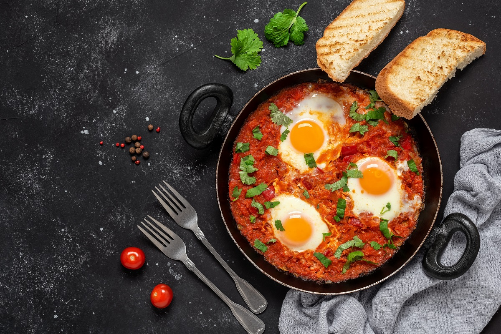

Shakshuka

Description
Shakshuka is a tradiotional breakfast food from the middle east , which consist on this dish made all in a pan, with tomato sauce and eggs, that is often diped with bread
Ingridients
- Eggs
- Olive Oil
- Red Bell Pepper
- Onion
- Garlic
- Chili Powder
- Smoked Paprika
- Cumin
- Baby Kale
- Marinara Sauce
- Salt
- Black Pepper
- Parsley
Steps
- Turn on a multi-functional pressure cooker (such as Instant Pot®) and select Saute function. Heat olive oil and cook onion, red bell pepper, garlic, chili powder, paprika, and cumin until soft, about 3 minutes. Add kale and cook until soft, about 2 minutes. Stir in marinara sauce and season with salt and pepper; turn off the pot and let cool for 5 minutes.
- Crack eggs carefully in the pot, evenly spaced. Close and lock the lid. Select low pressure according to manufacturer's instructions; set timer for 1 minute. Once it beeps, release pressure carefully using the quick-release method according to manufacturer's instructions, about 2 minutes. Unlock and remove the lid. Sprinkle with parsley.